VisDSR
DSU reasoning from text and images. Main study in progress.
CPulse-Tracker
Codeforces, CodeChef and LeetCode profiles in one dashboard.
Ybyte
Campus food ordering with live order updates and QR pickup.
×
Public repository
Open repository
↗
Hover, focus, or tap one of the three ringed stars.